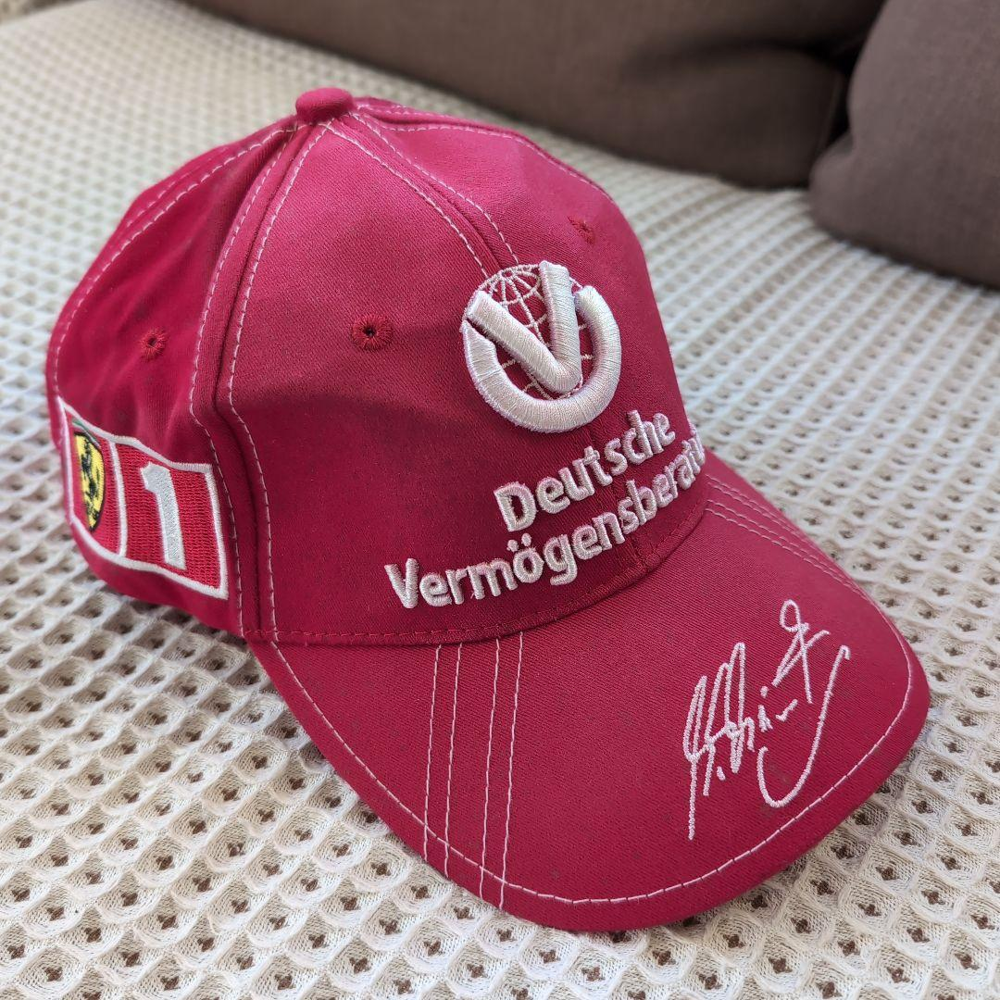

Ferrari · 2000 a 2004
Cinco títulos seguidos. A Ferrari mais dominante que a Fórmula 1 já viu.
21 anos
A Ferrari não ganhava um título de pilotos desde 1979. Em 1996 ela apostou tudo num alemão de 27 anos pra quebrar o jejum: Michael Schumacher.
Schumacher, Todt, Brawn
Schumacher puxou Jean Todt, Ross Brawn e Rory Byrne pra reconstruir a equipe do zero. Método, trabalho e obsessão por detalhe.
2000 a 2004
Cinco títulos mundiais em sequência, recorde até hoje. Naqueles anos, o vermelho da Ferrari virou sinônimo de linha de chegada.

O boné da era
O escudo ao lado do número 1, o número que só o campeão carrega. É essa fase de ouro bordada em pano.
Peças com história assim, garimpadas no Japão, aparecem toda semana no nosso grupo.
link na bio · @nipponspeedco